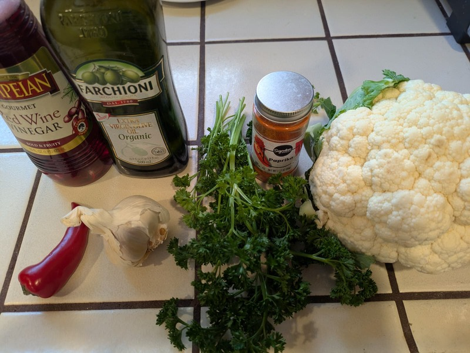
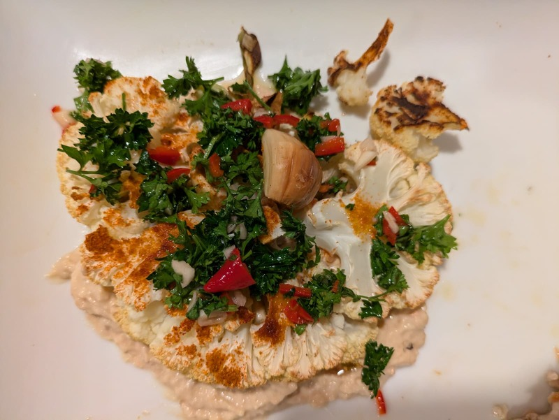

Cauliflower Chimichurri
Version 1: Cauliflower with Chimichurri & Thanini


Chimichurri
- 30g fresh parsley
- ½ red chilli
- 1 garlic clove
- 2 tbsp red wine vinegar
- 100ml extra virgin olive oil
Tahini
- Garbanzo bean (can)
- 1⁄2 lemon
- 1 garlic clove
- Salt and pepper
Steaks
- 1 large cauliflower
- 1 tbsp smoked paprika
- 3 garlic cloves
- 2 tbsp butter
Instructions
- Chimichurri: Finely chop parsley, chilli, and garlic. Mix with vinegar, then stream in oil while stirring. Season.
- Tahini: Blend beans with lemon juice, minced garlic until creamy. Season.
- Steaks: Rub cauliflower steaks with smoked paprika and minced garlic. Sear in a hot pan with butter. Serve over bean purée topped with chimichurri.
Oven alternative: Roast at 425°F / 220°C for 20-25 min, flipping halfway.
Version 2: Cauliflower with Harissa Tahini & Green Herb Beans
Steaks
- 1 large cauliflower
- 1 tbsp smoked paprika
- 3 garlic cloves
- 2 tbsp butter
Harissa Tahini
- 4 tbsp tahini
- 1 tsp harissa paste
- 1 garlic clove
- 1 lemon
- 3 tbsp water
Green Herb Bean Base
- 500g butter beans
- 60g fresh mint and parsley
- 1 lemon
- 1 tbsp olive oil
- 2 tbsp nutritional yeast
Instructions
- Harissa Tahini: Whisk together tahini, harissa, minced garlic, lemon juice, and water until smooth.
- Green Herb Bean Base: Blend butter beans with herbs, lemon, olive oil, and nutritional yeast until creamy.
- Steaks: Rub cauliflower steaks with smoked paprika and minced garlic. Sear in a hot pan with butter. Serve over herb bean purée, drizzle with harissa tahini, garnish with pomegranate seeds and coriander.
Oven alternative: Roast at 425°F / 220°C for 20-25 min, flipping halfway.
Source: Alfie Cooks
Video: YouTube